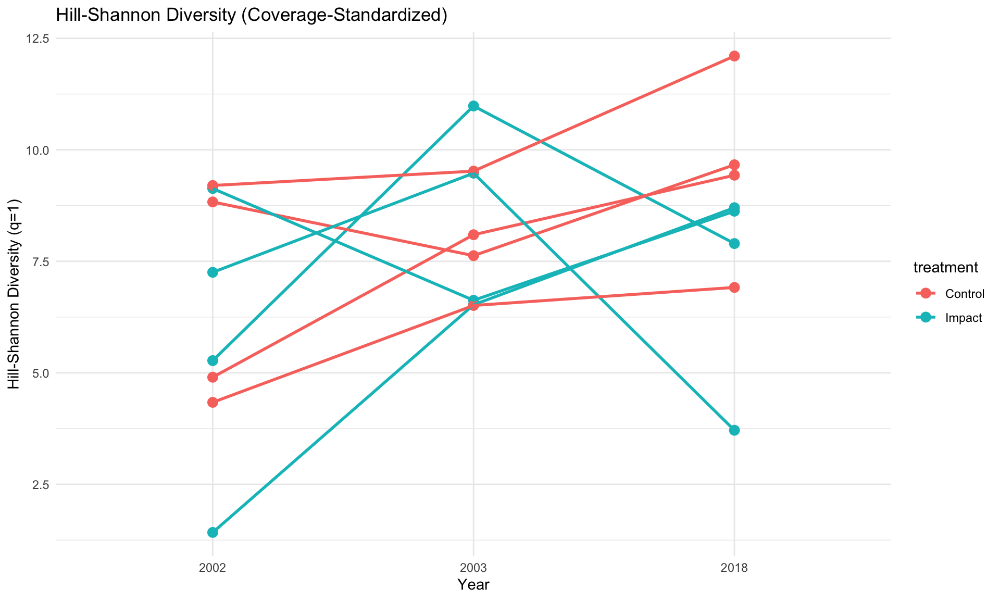
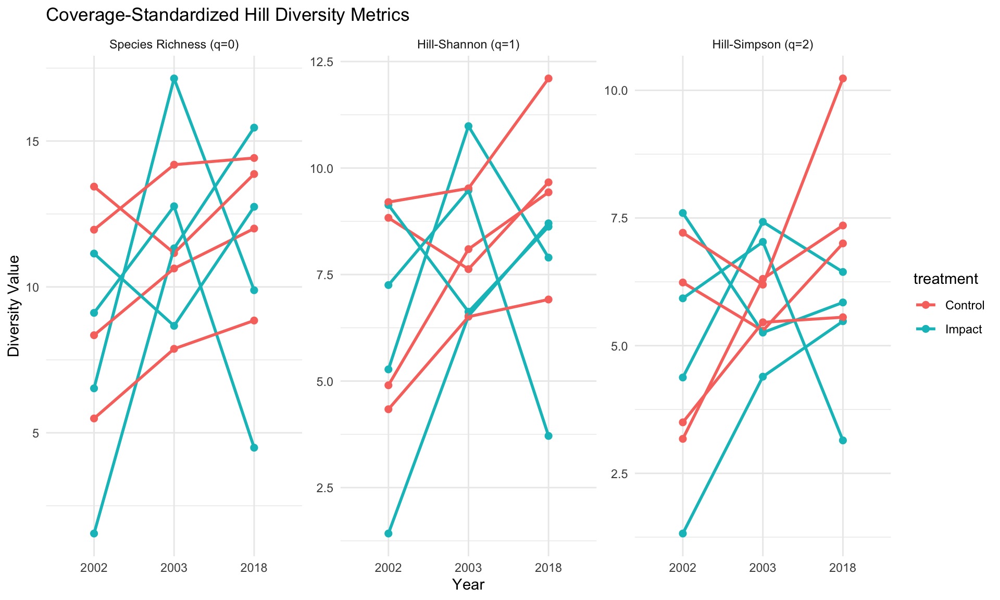
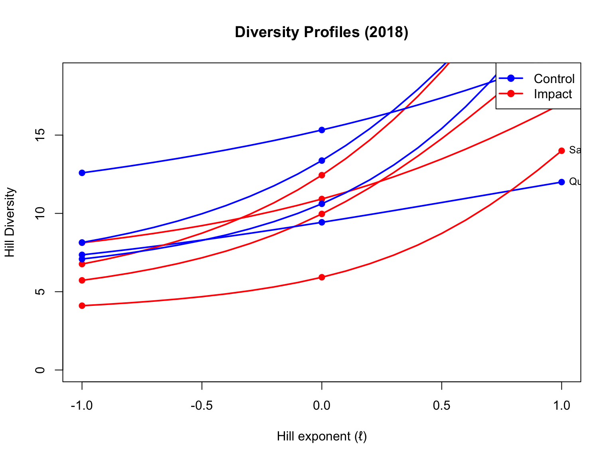
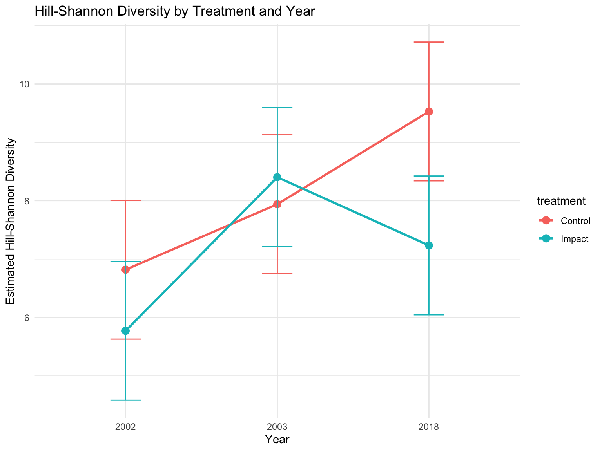
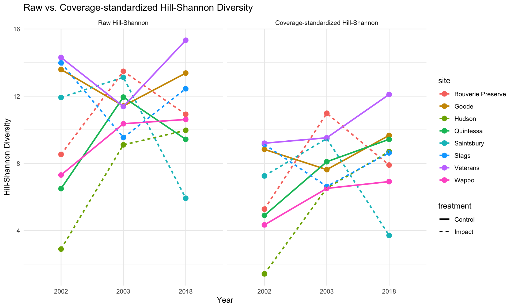

# Load required packages
library(MeanRarity) # For calculating Hill diversity metrics
library(iNEXT) # For coverage-based rarefaction
library(dplyr) # For data manipulation
library(tidyr) # For reshaping data
library(ggplot2) # For visualization
library(lubridate) # For date handling
library(lme4) # For mixed-effects models
library(lmerTest) # For p-values in mixed models
library(emmeans) # For estimated marginal means
# Read in the data
bee_data <- read.csv("../data/processed/bee_02-18_data.csv")
bee_traits <- read.csv("../data/processed/bee_traits.csv", header = TRUE)
site_data <- read.csv("../data/processed/sites.csv", header = TRUE)
dates_to_drop <- read.csv("../data/processed/02_03_18_datestodrop.csv", header = TRUE) Bee Diversity Analysis using MeanRarity
Analyzing Bee Diversity in a BACI Study Design
This analysis uses the methods described in Roswell et al. (2021) to analyze bee diversity across multiple sites in a Before-After-Control-Impact (BACI) design. We’ll use coverage standardization and Hill diversity metrics to provide a robust comparison of bee diversity.
Setup
First, we’ll load the necessary packages and read in our data.
Data Cleaning
Next, we’ll clean up the data, standardizing site names and formatting dates.
'data.frame': 3020 obs. of 11 variables:
$ barcode : int 20020087 20020088 20020089 20020090 20020091 20020092 20020094 20020095 20020096 20020097 ...
$ genus_name : chr "Andrena" "Nomada" "Nomada" "Eucera" ...
$ species : chr "sp. 6" "sp. 3" "sp. 10" "frater" ...
$ site : chr "Goode" "Goode" "Goode" "Goode" ...
$ start_date : Date, format: "2002-03-26" "2002-03-26" ...
$ type : chr "Male" "Female" "Female" "Male" ...
$ det : chr "R. W. Brooks" "R. W. Brooks" "R. W. Brooks" "R. W. Brooks" ...
$ year : int 2002 2002 2002 2002 2002 2002 2002 2002 2002 2002 ...
$ number : int 1 1 1 1 1 1 1 1 1 1 ...
$ technique : chr "netting" "netting" "netting" "netting" ...
$ combined_name: chr "Andrena sp. 6" "Nomada sp. 3" "Nomada sp. 10" "Eucera frater" ...Preparing Data for Diversity Analysis
To calculate Hill diversity metrics, we need to create a matrix of species abundances per site and year.
#l warning = FALSE
#l echo = FALSE
# Create a wide-format abundance matrix for diversity analysis
# Each row is a site-year combination, columns are species
abundance_matrix <- bee_data_clean %>%
group_by(site, year, combined_name) %>%
# Sum abundance of each species at each site-year
summarize(abundance = sum(number), .groups = "drop") %>%
# Convert to wide format: species as columns
pivot_wider(
id_cols = c(site, year),
names_from = combined_name,
values_from = abundance,
values_fill = 0 # Fill missing species with 0
)
# Safely extract site_year_ids with base R
site_year_ids <- data.frame(
site = abundance_matrix$site,
year = abundance_matrix$year
)
# Safely create abundance_values matrix
# This avoids issues with special characters in species names
abundance_values <- as.matrix(abundance_matrix[, 3:ncol(abundance_matrix)])
# Check dimensions
cat("Number of site-year combinations:", nrow(site_year_ids), "\n")Number of site-year combinations: 24 cat("Number of species columns:", ncol(abundance_values), "\n")Number of species columns: 157 # Add metadata about sampling effort
sampling_effort <- bee_data_clean %>%
group_by(site, year) %>%
summarise(sampling_events = n_distinct(start_date))`summarise()` has grouped output by 'site'. You can override using the
`.groups` argument.# Add treatment information from site_data
site_metadata <- site_year_ids %>%
left_join(sampling_effort, by = c("site", "year")) %>%
left_join(site_data %>% dplyr::select(site, treatment), by = "site")
head(site_metadata) site year sampling_events treatment
1 Bouverie Preserve 2002 8 Impact
2 Bouverie Preserve 2003 7 Impact
3 Bouverie Preserve 2018 8 Impact
4 Goode 2002 11 Control
5 Goode 2003 8 Control
6 Goode 2018 9 ControlCoverage-based Standardization
According to Roswell et al. (2021), coverage is a more robust way to standardize samples than equal effort or equal sample size. Coverage estimates what proportion of the total community (including undetected species) is represented in our sample.
# Calculate coverage for each site-year combination
site_coverage <- data.frame(site_year_ids,
coverage = apply(abundance_values, 1, function(x) {
# Count singletons (species with only 1 individual)
f1 <- sum(x == 1)
# Get total number of individuals
n <- sum(x)
# Calculate coverage using the formula from Chao and Jost (2012)
if (f1 == 0) {
return(1) # Perfect coverage if no singletons
} else {
return(1 - (f1/n) * ((n-1)/n))
}
}))
# Find the minimum coverage across all site-years (to use as standardization point)
min_coverage <- min(site_coverage$coverage)
cat("Minimum coverage across all site-years:", min_coverage, "\n")Minimum coverage across all site-years: 0.7696 # Display coverage by site and year
site_coverage %>%
arrange(coverage) %>%
knitr::kable(caption = "Sample coverage by site and year")| site | year | coverage |
|---|---|---|
| Quintessa | 2018 | 0.7696000 |
| Hudson | 2018 | 0.8310204 |
| Quintessa | 2002 | 0.8630401 |
| Bouverie Preserve | 2003 | 0.8750139 |
| Veterans | 2003 | 0.8889178 |
| Veterans | 2018 | 0.8955464 |
| Saintsbury | 2003 | 0.9043552 |
| Stags | 2003 | 0.9109000 |
| Bouverie Preserve | 2002 | 0.9121662 |
| Goode | 2018 | 0.9130481 |
| Saintsbury | 2018 | 0.9222320 |
| Goode | 2003 | 0.9222819 |
| Wappo | 2018 | 0.9240537 |
| Stags | 2018 | 0.9289966 |
| Hudson | 2003 | 0.9337374 |
| Goode | 2002 | 0.9381114 |
| Stags | 2002 | 0.9433975 |
| Quintessa | 2003 | 0.9554158 |
| Bouverie Preserve | 2018 | 0.9555612 |
| Hudson | 2002 | 0.9577470 |
| Veterans | 2002 | 0.9584780 |
| Wappo | 2003 | 0.9735688 |
| Saintsbury | 2002 | 0.9857483 |
| Wappo | 2002 | 0.9897810 |
Calculating Hill Diversity Metrics
Hill diversity unifies different diversity metrics (richness, Shannon, Simpson) into a common framework. The parameter ℓ (or q in some literature) determines how much weight is given to rare versus common species.
The MeanRarity package uses parameter q in its code implementation, while their conceptual framework in the paper uses ℓ. The relationship between them is ℓ = 1-q, so:
Species richness: ℓ=1 corresponds to q=0 Hill-Shannon: ℓ=0 corresponds to q=1 Hill-Simpson: ℓ=-1 corresponds to q=2
# Function to calculate Hill diversity metrics for each site-year
calculate_diversity_metrics <- function() {
diversity_results <- data.frame()
for (i in 1:nrow(site_year_ids)) {
site_id <- site_year_ids$site[i]
yr <- site_year_ids$year[i]
# Extract abundance data for this site-year
site_data_vec <- abundance_values[i, ]
site_data_vec <- site_data_vec[site_data_vec > 0] # Remove zeros
# Calculate raw Hill diversity using the rarity function from MeanRarity
richness_raw <- rarity(site_data_vec, q = 0)
hill_shannon_raw <- rarity(site_data_vec, q = 1)
hill_simpson_raw <- rarity(site_data_vec, q = 2)
# Use iNEXT to estimate diversity at standardized coverage
inext_result <- estimateD(site_data_vec, datatype = "abundance",
base = "coverage", level = min_coverage)
# The issue is in extracting values from inext_result
# Print the structure to understand how to access the values
# print(str(inext_result))
# Get the values in the correct way
# iNEXT results are sorted by order (0, 1, 2)
richness_std <- inext_result$qD[1] # First row is q=0 (richness)
hill_shannon_std <- inext_result$qD[2] # Second row is q=1 (Shannon)
hill_simpson_std <- inext_result$qD[3] # Third row is q=2 (Simpson)
# Combine with existing metadata
result_row <- data.frame(
site = site_id,
year = yr,
raw_richness = richness_raw,
raw_hill_shannon = hill_shannon_raw,
raw_hill_simpson = hill_simpson_raw,
std_richness = richness_std,
std_hill_shannon = hill_shannon_std,
std_hill_simpson = hill_simpson_std,
coverage = site_coverage$coverage[i]
)
# Append to the result data frame
diversity_results <- rbind(diversity_results, result_row)
}
# Add metadata about treatment and sampling effort
diversity_results <- diversity_results %>%
left_join(site_metadata, by = c("site", "year"))
return(diversity_results)
}
# Calculate diversity metrics
diversity_results <- calculate_diversity_metrics()
# Create factors for time period and ensure proper ordering
diversity_results$period <- ifelse(diversity_results$year == "2018", "After", "Before")
diversity_results$period <- factor(diversity_results$period, levels = c("Before", "After"))
diversity_results$treatment <- factor(diversity_results$treatment, levels = c("Control", "Impact"))
diversity_results$year <- factor(diversity_results$year, levels = c("2002", "2003", "2018"))Visualizing Diversity Metrics
Now let’s visualize the diversity results to better understand the patterns across sites, years, and treatments.
# Visualize Hill-Shannon diversity (standardized by coverage)
ggplot(diversity_results, aes(x = year, y = std_hill_shannon, color = treatment, group = site)) +
geom_point(size = 3) +
geom_line(linewidth = 1) +
labs(title = "Hill-Shannon Diversity (Coverage-Standardized)",
x = "Year",
y = "Hill-Shannon Diversity (q=1)") +
theme_minimal()
# Compare all three diversity metrics
diversity_long <- diversity_results %>%
pivot_longer(cols = c(std_richness, std_hill_shannon, std_hill_simpson),
names_to = "metric",
values_to = "value") %>%
mutate(metric = factor(metric,
levels = c("std_richness", "std_hill_shannon", "std_hill_simpson"),
labels = c("Species Richness (q=0)",
"Hill-Shannon (q=1)",
"Hill-Simpson (q=2)")))
ggplot(diversity_long, aes(x = year, y = value, color = treatment, group = site)) +
facet_wrap(~ metric, scales = "free_y") +
geom_point(size = 2) +
geom_line(linewidth = 1) +
labs(title = "Coverage-Standardized Hill Diversity Metrics",
x = "Year",
y = "Diversity Value") +
theme_minimal()
Diversity Profiles
Diversity profiles show how diversity changes with the Hill exponent ℓ, giving a more complete picture of community structure.
# Create diversity profiles for each site in the final year (2018)
# Filter to just 2018 data
data_2018 <- abundance_matrix %>%
filter(year == "2018")
site_ids_2018 <- data_2018$site
# Safely extract abundance data for 2018 sites
# Using the same approach we used above
abundance_2018 <- as.matrix(data_2018[, 3:ncol(data_2018)])
# Get treatment information
treatments_2018 <- site_metadata %>%
filter(year == "2018") %>%
dplyr::select(site, treatment)
# Set up the plot
par(mfrow = c(1, 1))
plot(NULL, xlim = c(-1, 1), ylim = c(0, max(diversity_results$std_richness) * 1.1),
xlab = "Hill exponent (ℓ)", ylab = "Hill Diversity",
main = "Diversity Profiles (2018)")
# Define colors for treatments
colors <- c("Control" = "blue", "Impact" = "red")
# Calculate and plot diversity profiles
for (i in 1:nrow(abundance_2018)) {
site_id <- site_ids_2018[i]
site_abund <- abundance_2018[i, ]
site_abund <- site_abund[site_abund > 0] # Remove zeros
# Get treatment for this site
site_treatment <- treatments_2018$treatment[treatments_2018$site == site_id]
# Calculate diversity for a range of exponents
exponents <- seq(-1, 1, by = 0.1)
profile_values <- sapply(exponents, function(ell) rarity(site_abund, q = 1 - ell))
# Plot the profile
lines(exponents, profile_values, col = colors[site_treatment], lwd = 2)
points(c(-1, 0, 1), profile_values[c(1, 11, 21)],
col = colors[site_treatment], pch = 19)
text(1, profile_values[21], site_id, pos = 4, cex = 0.8)
}
# Add a legend
legend("topright", legend = names(colors), col = colors, lwd = 2, pch = 19)
Statistical Analysis
Now we analyze the diversity data using linear mixed-effects models with a BACI design. As recommended by Roswell et al., we focus primarily on Hill-Shannon diversity for our statistical analysis because it provides a balanced measure of diversity.
# Model for Hill-Shannon diversity (recommended for ecological applications)
model_hill_shannon <- lmer(std_hill_shannon ~ year * treatment + (1 | site),
data = diversity_results)
summary(model_hill_shannon)Linear mixed model fit by REML. t-tests use Satterthwaite's method [
lmerModLmerTest]
Formula: std_hill_shannon ~ year * treatment + (1 | site)
Data: diversity_results
REML criterion at convergence: 90.2
Scaled residuals:
Min 1Q Median 3Q Max
-1.7334 -0.6492 0.1059 0.7308 1.3771
Random effects:
Groups Name Variance Std.Dev.
site (Intercept) 0.8421 0.9176
Residual 4.8132 2.1939
Number of obs: 24, groups: site, 8
Fixed effects:
Estimate Std. Error df t value Pr(>|t|)
(Intercept) 6.818 1.189 17.236 5.734 2.31e-05 ***
year2003 1.121 1.551 12.000 0.723 0.484
year2018 2.710 1.551 12.000 1.747 0.106
treatmentImpact -1.047 1.682 17.236 -0.623 0.542
year2003:treatmentImpact 1.511 2.194 12.000 0.689 0.504
year2018:treatmentImpact -1.247 2.194 12.000 -0.568 0.580
---
Signif. codes: 0 '***' 0.001 '**' 0.01 '*' 0.05 '.' 0.1 ' ' 1
Correlation of Fixed Effects:
(Intr) yr2003 yr2018 trtmnI y2003:
year2003 -0.652
year2018 -0.652 0.500
trtmntImpct -0.707 0.461 0.461
yr2003:trtI 0.461 -0.707 -0.354 -0.652
yr2018:trtI 0.461 -0.354 -0.707 -0.652 0.500# Extract p-values
p_values <- summary(model_hill_shannon)$coefficients[, "Pr(>|t|)"]
print(p_values) (Intercept) year2003 year2018
2.307004e-05 4.837059e-01 1.061402e-01
treatmentImpact year2003:treatmentImpact year2018:treatmentImpact
5.415425e-01 5.040872e-01 5.803520e-01 # Calculate estimated marginal means
emm_hill_shannon <- emmeans(model_hill_shannon, ~ year * treatment)
pairs(emm_hill_shannon) contrast estimate SE df t.ratio p.value
year2002 Control - year2003 Control -1.121 1.55 12.0 -0.723 0.9752
year2002 Control - year2018 Control -2.710 1.55 12.0 -1.747 0.5295
year2002 Control - year2002 Impact 1.047 1.68 17.2 0.623 0.9877
year2002 Control - year2003 Impact -1.585 1.68 17.2 -0.942 0.9296
year2002 Control - year2018 Impact -0.416 1.68 17.2 -0.248 0.9998
year2003 Control - year2018 Control -1.589 1.55 12.0 -1.024 0.9009
year2003 Control - year2002 Impact 2.168 1.68 17.2 1.290 0.7866
year2003 Control - year2003 Impact -0.464 1.68 17.2 -0.276 0.9997
year2003 Control - year2018 Impact 0.705 1.68 17.2 0.419 0.9980
year2018 Control - year2002 Impact 3.758 1.68 17.2 2.235 0.2722
year2018 Control - year2003 Impact 1.125 1.68 17.2 0.669 0.9831
year2018 Control - year2018 Impact 2.294 1.68 17.2 1.364 0.7466
year2002 Impact - year2003 Impact -2.632 1.55 12.0 -1.697 0.5580
year2002 Impact - year2018 Impact -1.464 1.55 12.0 -0.943 0.9271
year2003 Impact - year2018 Impact 1.169 1.55 12.0 0.753 0.9705
Degrees-of-freedom method: kenward-roger
P value adjustment: tukey method for comparing a family of 6 estimates # Also analyze richness and Simpson diversity for comparison
model_richness <- lmer(std_richness ~ year * treatment + (1 | site),
data = diversity_results)
summary(model_richness)Linear mixed model fit by REML. t-tests use Satterthwaite's method [
lmerModLmerTest]
Formula: std_richness ~ year * treatment + (1 | site)
Data: diversity_results
REML criterion at convergence: 105.5
Scaled residuals:
Min 1Q Median 3Q Max
-1.70784 -0.50146 -0.02167 0.58058 1.36244
Random effects:
Groups Name Variance Std.Dev.
site (Intercept) 0.2659 0.5156
Residual 12.6736 3.5600
Number of obs: 24, groups: site, 8
Fixed effects:
Estimate Std. Error df t value Pr(>|t|)
(Intercept) 9.809 1.799 17.985 5.454 3.53e-05 ***
year2003 1.156 2.517 12.000 0.459 0.654
year2018 2.475 2.517 12.000 0.983 0.345
treatmentImpact -2.727 2.544 17.985 -1.072 0.298
year2003:treatmentImpact 4.236 3.560 12.000 1.190 0.257
year2018:treatmentImpact 1.088 3.560 12.000 0.306 0.765
---
Signif. codes: 0 '***' 0.001 '**' 0.01 '*' 0.05 '.' 0.1 ' ' 1
Correlation of Fixed Effects:
(Intr) yr2003 yr2018 trtmnI y2003:
year2003 -0.700
year2018 -0.700 0.500
trtmntImpct -0.707 0.495 0.495
yr2003:trtI 0.495 -0.707 -0.354 -0.700
yr2018:trtI 0.495 -0.354 -0.707 -0.700 0.500model_simpson <- lmer(std_hill_simpson ~ year * treatment + (1 | site),
data = diversity_results)
summary(model_simpson)Linear mixed model fit by REML. t-tests use Satterthwaite's method [
lmerModLmerTest]
Formula: std_hill_simpson ~ year * treatment + (1 | site)
Data: diversity_results
REML criterion at convergence: 79.9
Scaled residuals:
Min 1Q Median 3Q Max
-1.73870 -0.59927 0.06513 0.63334 1.50122
Random effects:
Groups Name Variance Std.Dev.
site (Intercept) 0.619 0.7867
Residual 2.612 1.6162
Number of obs: 24, groups: site, 8
Fixed effects:
Estimate Std. Error df t value Pr(>|t|)
(Intercept) 5.0304 0.8987 16.7691 5.597 3.37e-05 ***
year2003 0.7827 1.1428 12.0000 0.685 0.5064
year2018 2.5056 1.1428 12.0000 2.193 0.0488 *
treatmentImpact -0.2248 1.2710 16.7691 -0.177 0.8618
year2003:treatmentImpact 0.4380 1.6162 12.0000 0.271 0.7910
year2018:treatmentImpact -2.0831 1.6162 12.0000 -1.289 0.2217
---
Signif. codes: 0 '***' 0.001 '**' 0.01 '*' 0.05 '.' 0.1 ' ' 1
Correlation of Fixed Effects:
(Intr) yr2003 yr2018 trtmnI y2003:
year2003 -0.636
year2018 -0.636 0.500
trtmntImpct -0.707 0.450 0.450
yr2003:trtI 0.450 -0.707 -0.354 -0.636
yr2018:trtI 0.450 -0.354 -0.707 -0.636 0.500# Plot the estimated means with error bars
emm_data <- as.data.frame(emm_hill_shannon)
ggplot(emm_data, aes(x = year, y = emmean, color = treatment, group = treatment)) +
geom_point(size = 3) +
geom_line(linewidth = 1) +
geom_errorbar(aes(ymin = emmean - SE, ymax = emmean + SE), width = 0.2) +
labs(title = "Hill-Shannon Diversity by Treatment and Year",
x = "Year",
y = "Estimated Hill-Shannon Diversity") +
theme_minimal()
Analysis of Raw vs. Coverage-standardized Results
Let’s compare the raw diversity metrics with the coverage-standardized metrics to see how standardization affects our conclusions.
The shape of the curves are similar although estimated species of the Hill Shannon estimate is lower.
# Combine raw and standardized metrics for comparison
diversity_compare <- diversity_results %>%
dplyr::select(site, year, treatment, period,
raw_hill_shannon, std_hill_shannon,
sampling_events, coverage) %>%
pivot_longer(
cols = c(raw_hill_shannon, std_hill_shannon),
names_to = "metric_type",
values_to = "hill_shannon"
) %>%
mutate(metric_type = factor(metric_type,
levels = c("raw_hill_shannon", "std_hill_shannon"),
labels = c("Raw Hill-Shannon", "Coverage-standardized Hill-Shannon")))
# Plot the comparison
ggplot(diversity_compare, aes(x = year, y = hill_shannon, linetype = treatment, color = site, group = site)) +
facet_wrap(~ metric_type) +
geom_point(size = 3) +
geom_line(size = 1) +
labs(title = "Raw vs. Coverage-standardized Hill-Shannon Diversity",
x = "Year",
y = "Hill-Shannon Diversity") +
theme_minimal()Warning: Using `size` aesthetic for lines was deprecated in ggplot2 3.4.0.
ℹ Please use `linewidth` instead.
# Check correlation between sampling events and raw diversity
cor_sampling_raw <- cor(diversity_results$sampling_events, diversity_results$raw_hill_shannon)
cat("Correlation between sampling events and raw Hill-Shannon diversity:", cor_sampling_raw, "\n")Correlation between sampling events and raw Hill-Shannon diversity: 0.05416637 # Check correlation between sampling events and standardized diversity
cor_sampling_std <- cor(diversity_results$sampling_events, diversity_results$std_hill_shannon)
cat("Correlation between sampling events and standardized Hill-Shannon diversity:", cor_sampling_std, "\n")Correlation between sampling events and standardized Hill-Shannon diversity: -0.2178351 Key Findings
Coverage Standardization: Standardizing by coverage rather than by sample size or effort allows for more robust comparisons across sites and years. The minimum coverage across our samples was 0.769, which means we’re comparing equally complete samples from each community.
Hill Diversity Metrics: The three Hill diversity metrics (richness, Shannon, and Simpson) provide different perspectives on community diversity:
- Species richness (ℓ=1, q=0) gives equal weight to all species and is most sensitive to rare species
- Hill-Shannon diversity (ℓ=0, q=1) provides a balanced view of diversity
- Hill-Simpson diversity (ℓ=-1, q=2) emphasizes common species
BACI Analysis: Our statistical analysis using a BACI design reveals:
- None of the models are significant
- We have no interaction terms that are significant
- Using the Simpson diversity which emphasizes common diversity, there is a difference between 2002 and 2018
Comparison to Traditional Methods
The approach using Hill diversity and coverage standardization provides several advantages over traditional methods:
More robust to sampling differences: By standardizing to equal coverage, we account for differences in the underlying species abundance distributions across sites and years.
Unified framework: The Hill diversity framework provides a unified way to understand different aspects of diversity, from rare species (richness) to common species (Simpson).
Interpretable units: All Hill diversity metrics are expressed in “effective number of species,” making them more intuitive to interpret than traditional indices.
References
Roswell, M., Dushoff, J., & Winfree, R. (2021). A conceptual guide to measuring species diversity. Oikos, 130(3), 321-338.